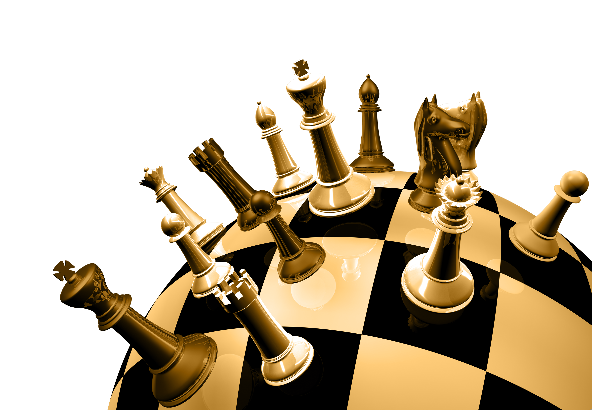

Ajedrez
El ajedrez es un juego de estrategia en el que dos
personas se desafían frente a un tablero cuadriculado de 64 casillas y dos
grupos de figuras, 16 para cada jugador, unas blancas y
otras negras: un rey, una dama, dos alfiles, dos caballos, dos torres y
ocho peones.

PIEZAS DE AJEDREZ
Las piezas de cada jugador al principio de la partida son:
Un rey, Una dama, también conocida popularmente como reina, Dos alfiles, Dos caballos, Dos torres y Ocho peones.
Cada tipo de pieza se puede mover de una forma diferente, lo que determinará su potencia y su importancia
en el desarrollo del juego.
Rey
Puede moverse en todas las direcciones pero una sola casilla a la vez.
Reina
Se mueve en todas las direcciones, tanto ortogonales como diagonales.
Alfil
Se mueve en direcciones diagonales, en
la dirección de las casillas del mismo color.
Caballo
Se mueve en "forma de L", o sea, mueve dos casillas
en horizontal y después una en vertical, o viceversa.
Torre
Se mueve en direcciones ortogonales, por las filas
(horizontales) y columnas (verticales).

Peón
Se mueve hacia adelante una casilla.
Puede capturar una pieza adversaria en cualquiera de los escaques diagonales en frente.